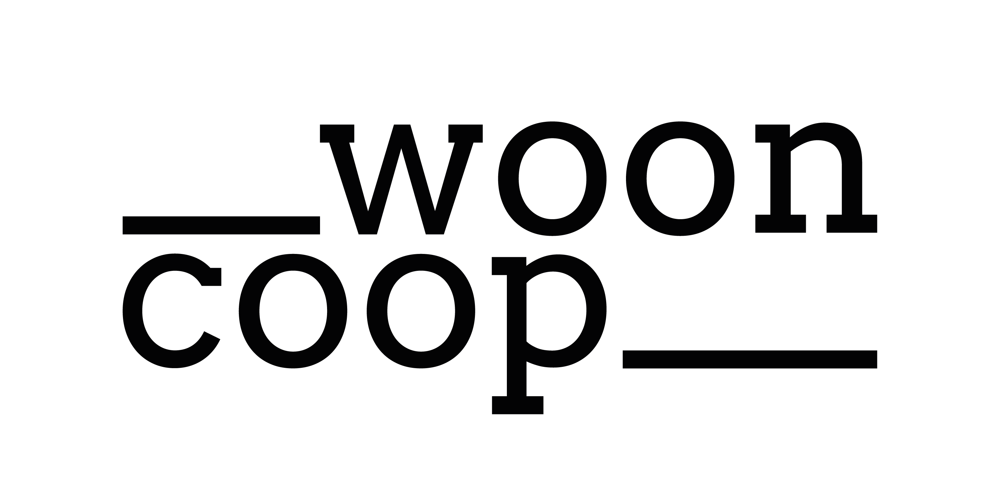

Van eerste kennismaking tot trotse bewoner-coöperant: hoe elke stap van de reis eruit kan zien wanneer ze vertrekt vanuit wat bewoners echt nodig hebben.
Klik op een fase om de ideale ervaring te bekijken. De curve toont hoe de bewoner zich onderweg voelt: vandaag (grijs, met de dip bij het financiële gesprek) en in de ideale reis (groen).
Bron pijnpunten en kansen: as-is journey workshop wooncoop x The Kind Kids, 12 mei 2026. Quotes zijn fictieve voorbeelden ter illustratie; de echte stemmen komen uit de acht bewonersinterviews.